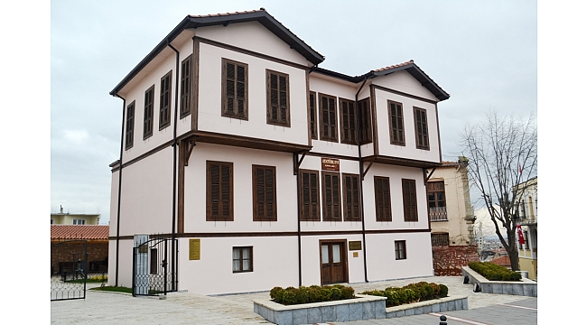

.jpg)
BURASI MUTLU İNSANLAR KENTİ KIRKLARELİ
Kırklareli Türkiye'nin Trakya bölümünde yer alan il. Batı sınırımızdaki Kırklareli, Marmara bölgesinin Istranca ve Ergene bölümleri üzerinde bulunmaktadır. Trakya’nın en büyük ili olup, İstanbul, Karadeniz, Tekirdağ, Edirne ve Bulgaristan ile çevrilidir. 41° 14’ ve 42° 00’ kuzey enlemleri ile 28°53’ ve 26°13’ doğu boylamları arasında yer alır. Trafik numarası 39’dur.
Kırklareli Mutfağı
Kırklareli hem hayvancılık yapılan bir bölge olduğu hem de denize yakın olduğundan et ve süt ürünlerinin yanı sıra balığın da sıkça tüketildiği bir mutfağa sahip. Köfte, keşkek, zerde, tuzlu bir kek çeşidi olan plaska, sütlü tatlı çeşidi kaymaçina, kıymayla hazırlanan çoban böreği ve kalın kıyı, yöreye özgü üzümden yapılan içecek hardaliye ve sini mantısı, Kırklareli’ye özgü yemek çeşitlerinden sadece bazıları. Kırklareli yöresinde pek çok çorba çeşidi yapılmaktadır. Bir tür işkembe çorbası olan değirmendere, hamur kullanılarak yapılan umaç çorbası, et suyundan yapılan höşmel ve Anadolu'nun her yerinde sevilerek tüketilen tarhana yöreye özgü çorbalardır. Kırklareli mutfağı sebze çeşitleri açısından oldukça zengindir. yoğurtlu borani yemeği, unlu labada ile yapılan toğga, patlıcan biber közlemesinden oluşan manca ve lahana yemeği kapuska sevilerek tüketilen sebze yemekleridir. Düğünlerin ve davetlerin gözdesi ise kuşkusuz yahni yemeğidir. Et haşlama, tas kebabı, hıdrellez kuzusu, ciğer tava ve Kırklareli Köftesi yöresel et yemeklerinin başlıcaları olarak görülür. Kırklareli deniz ürünleri açısından da zengin bir mutfağa sahiptir. Çinekop, lüfer, tekir, barbun, hamsi, istavrit ve palamut çokça tüketilen deniz ürünleri arasında yer alır. Bunların ekseriyesi korda pişirilmektedir. Palamut ve torik balıklarının lakerdası ile kefalin pilakisi yöresel balık yemeklerinin en meşhurlarıdır. Kırklareli mutfağının tatlı bölümüne ise şerbetli tatlılar hakimdir. Hurma tatlısı, baklava, irmik, kadıngöbeği, ekmek ve kabak tatlısı ile höşmerim sıkça tüketilir.
Doğal Yerler
Kırklareli'nde gezip görülebilecek doğal yerler arasında göl ve barajlar, mağara, tabiatı koruma alanları, orman içi dinlenme ve mesire yerleri ile plajlar bulunmaktadır.Peynir, yoğurt, sucuk ve köftesi cok lezzetlidir.
Göl ve barajlar
Kırklareli'nde Hamam, Pedina, Mert, Erikli ve Saka gölleri ile Kırklareli,Armağan ve Kayalı barajları bulunmaktadır.
Mağaralar
Merkezde Bedre, Demirköy'de Dupnisa Mağarası, Pınarhisar'da Pekmezdere, Vize'de Domuzdere, Kaptanın, Kıyıköy ve Yenesu mağaraları bulunmaktadır. Dupnisa mağarasının içinin yaz aylarında bile çok soğuk olduğu biliniyor.
Coğrafya ve İklim
Marmara Bölgesi’ndeki Kırklareli, özellikle çevresindeki dağlar ve kıyısındaki Karadeniz sebebiyle farklı iklim ve hava koşullarına sahiptir. Şehir merkezinde karasal iklim hakimdir. Bu sebeple yazlar sıcak, kışlar soğuk ve zaman zaman kar yağışlıdır. Istranca Dağları’nın kuzeye bakan kesimlerinde ise Karadeniz iklimi görülür. Buna bağlı olarak yazlar serin, kışlar ise soğuktur. Yüzde 48’ini dağların oluşturduğu şehirde ormanlar da yoğundur. Bu sebeple Türkiye’nin önemli av merkezlerinden biridir ve buna ilgi duyanlar ekim-şubat ayları arasında Kırklareli’ni ziyaret ederler.
Tarihi Yerler
Kırklareli il merkezinde bulunan Arasta (Bedesten)
Kırklareli'ndeki Osmanlı mirası arasında cami, hamam, imaret, şehitlik, çeşme,arasta, köprü ve türbeler yer almaktadır.
Fatih Sultan Mehmet'in, İstanbul'u fethetmek için kullandığı bir kısım topların döküldüğü Fatih Dökümhanesi'nde ise düzenleme çalışmaları hâlen devam ediyor. Demirköy ilçesinde bulunan ve İstanbul'un fethi sırasında kullanılan topların döküldüğü dökümhanenin çevresi teller ile koruma altına alınmış ve çevre temizliği yapılmıştır. Dökümhanede üniversiteler tarafından gerçekleştirilen kazı çalışmalarına yaz aylarında devam edilmektedir. Fatih Dökümhanesi'nden günümüze fırın bacası ve temel seviyesinde duvarlar kalmıştır. Dökümhanenin dönemin bölgedeki en modern işletmesi olduğu varsayılmaktadır.
Dupnisa Mağarası'nın daha rahat ziyaret edilebilmesini sağlayacak tedbirler alınmıştır. Kırklareli Valiliği tarafından hazırlanan "Dupnisa Mağarası Düzenleme Sistemi Projesi" uygulaması tamamlanmıştır. Proje ile mağaranın aydınlatması sağlanmış ve gezi yolları ve giriş bölümü çevre düzenlemesi yapılmıştır.
Kırklareli Atatürk Evi

Kırklareli halkı Atatürkçülüğüyle tanınır. Buradan yola çıkılarak Kırklareli Belediyesi öncülüğünde Kırklarelili hayırsever vatandaşların desteği ile bir buçuk yılda yapımı tamamlanan Kırklareli Atatürk Evi 17 Ocak 2018 tarihinde ziyarete açıldı. Yayla mahallesinde yer alan ve mimarı olarak Selanikteki Ulu Önder’in evinin birebir aynısı olan Kırklareli Atatürk Evi düzenlenmesinde en ince ayrıntısına kadar önem verilmiş olup, Kırklareli’nin tarihsel değerini arttırıp Kent Kültürü ve toplumsal değerler bakımından önemli bir merkez olup Gazi Mustafa Kemal Atatürk’e olan sevgimizi, vefamızı ve bağlılığımızı simgeleyecektir.

Kırklareli'de Gezin